FOOD OF INDIA
Cuisine in India
Indian cuisine is as vast and varied as its multi-ethnic culture. The delicious and exotic dishes of India are characterize by the subtle use of spices and herbs. Indian cuisines vary greatly from region to region. Different regions adopt different cuisines. India prides itself on serving the most diverse cuisine in the world. Each region has its own specialties and different ways of cooking. The cooking style, the flavor and its specialties change with the landscapes. Most Indian cuisines are vegetarian, but Indians also love non-vegetarian delicacies cooked with fish, lamb, goat, chicken, and other meats. Food has always important to the culture of India.
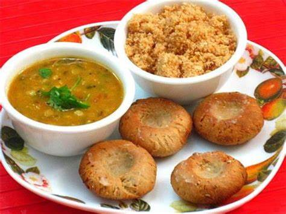
Rajasthan – Dal Baati Churma
This famous Rajasthani dish needs no introduction. Dal bati churma is synonymous to Rajasthan; known for its crunchy batis, dipped in ghee along with spicy daal and sweet churma.
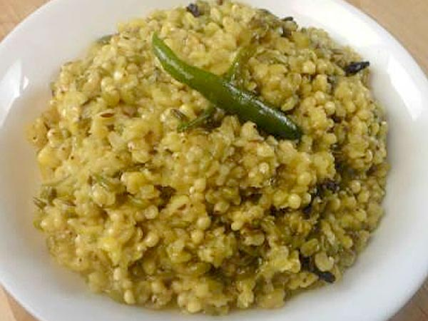
Haryana – Bajre Ki Khichdi
Bajre Ki Khichdi is one of the state’s specials. It is very healthy as it has the health of iron and is very easy to digest which is something you will enjoy.
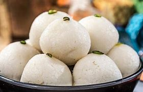
West Bengal- Rasgulla
The main emphasis of Bengali is on fish and rice. Since countless rivers flow through the state, so you can find fish everywhere in the market, there are more than forty types of fish served in Bengal.
.jpg)
Punjab – Makki Di Roti & Sarson Da Saag
Punjabi cuisines are not only popular in India, but also in the UK and Canada. Agriculture and livestock are their main occupation and locally grown foods are the main ingredients of the dishes.
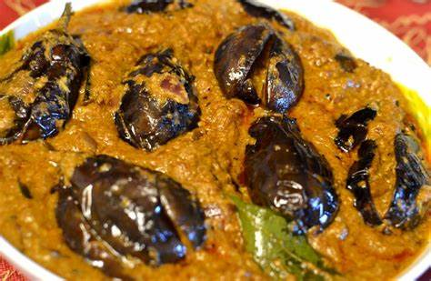
Andhra Pradesh- Gutti Vankaya Kura
Andhra Pradesh food includes vegetarian and non-vegetarian dishes. The main food is rice, as it is also called “Rice Bowl of India”, the food is served on a banana leaf. One of the main ingredients is tamarind along with curry leaves, tomatoes and mustard seeds.
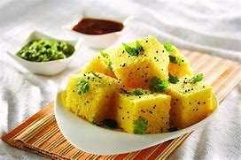
Gujarat – Dhokla
Gujarat has a long coastline with an abundance of seafood available, but most Gujarat people are vegetarians due to the influence of Jainism.
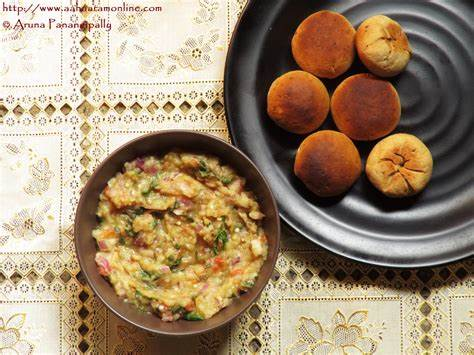
Bihar – Litti Chokha
Litti Chokha is the most popular Bihari cuisine, Litti is small balls of wheat that are baked over coals and dipped in ghee, while Chokha is a curry made by mashing boiled vegetables and adding spices and onion to it.
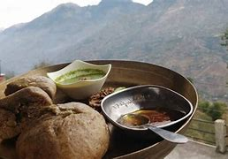
Himachal Pradesh- Sidu
Himachal Pradesh is a hilly terrain so fresh vegetables are hard to find. People usually are non-vegetarian and use meat, lentils, rice, and pulses in their food.
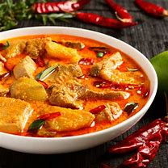
Goa – Fish Curry
Goa is locate along the coastal strip, so mainly fish and chicken dishes are used. Seafood lovers can find a delicious variety of prawns, mussels, crabs, lobsters, mackerel, tuna and salmon.
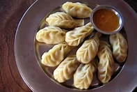
Sikkim- Momos
The most popular sikkim dishes are vegetarian momo products with dumplings and vegetables, and dumplings for non-vegan momo, fish, chicken and lamb.
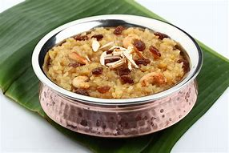
Tamil Nadu- Pongal
Tamil people are very hospitable and love feeding others, there are a lot of Tamil Brahmins, so their food is mainly vegetarian. but they have non-vegetarian dishes as well.
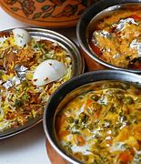
Telangana- Hyderabadi Biryani
Telugu cuisine is spicy, hot and spicy. Millet bread is the main food here, and wheat is also the main ingredient. The most famous is the Chicken Biryani, which is scrumptious with a blend of spices and seasonings.
Odisha – Chenna Poda
Odisha’s cheesecake! Sweet Odisha is famous for: Chhena Poda, also known to Lord Jagannath’s favorite dessert and often offered to him at the Puri temple.

Maharashtra- Misal Pav
Misal Pav is one of those street foods like by almost everyone in Maharashtra. States Of India and their food That they are Famous For. India national food Cuisines each state has its own unique style of cuisine india national food
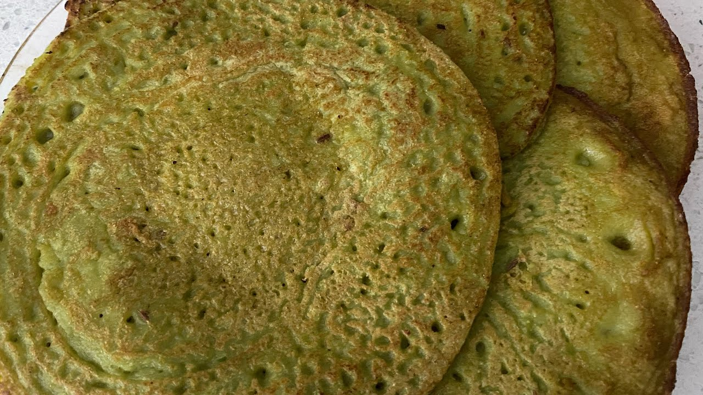
Chhattisgarh – Cheela
Chhattisgarh is the central state of India, so you will get a mix of North and South Indian flavors. Wheat, jowar and maize make up the staple diet of Chhattisgarh, rice is also consumed in abundance
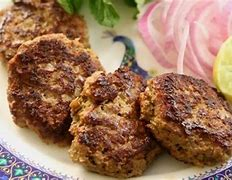
Uttar Pradesh – Kabab
Uttar Pradesh is food of states of india its Nawabi food, its cooking technique is influence by the Mughals. Lucknow’s most famous dishes are “tunda kebabs” and “kakori kebabs”.
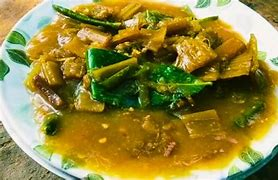
Tripura- Chakhwi
Tripuris are mostly nonvegetarians and you will find varieties of meat used here. Food of states of india The main food includes rice, fish, chicken, mutton, and pork.
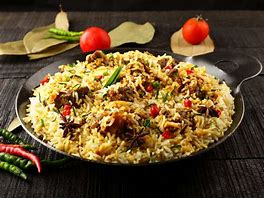
Meghalaya – Jadoh
Jodoh is the Khasi version of biryani. This famous Meghalaya dish is red hill rice which is cook with pork chunks, vegetables and garnish with fried fish or eggs. The unique spices give this dish its popularity.